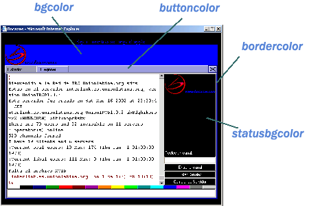
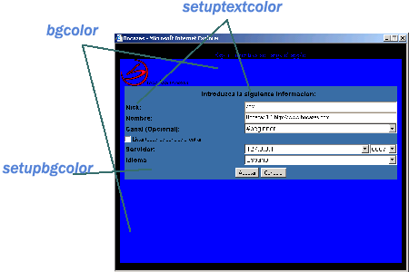
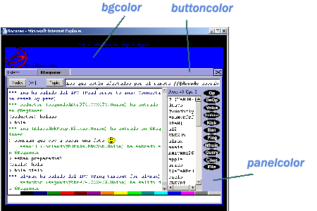

|
|
Preguntas Frecuentes de Bocazas 1.1 |
|
|
Licencia Eres libre de distribuir y utilizar este programa siempre y cuando se distribuya completamente, sin ningun tipo de modificacion y de forma gratuita. Tampoco puede utilizar este programa para cobrar por la utilización de los servicios proporcionados por el mismo sin el previo consentimiento de Bocazas S.L. Bocazas S.L. no es responsable del contenido de las paginas web donde se hospede el programa ni de ningun tipo de daño, cualquiera que sea, provocado por la utilizacion de este programa.
¿Cuales son las características generales del programa y que versiones hay disponibles? La información más detallada sobre las distintas versiones de Bocazas la puedes encontrar en http://www.bocazas.com/bocazas.asp
¿Dónde subo los ficheros que están dentro del fichero comprimido? Los ficheros se deben subir todos al mismo directorio donde vayas a mostrar tu página de chat. Como ejemplo se incluyen dos ficheros:
Puedes utilizar dichos ficheros si lo deseas pero cualquier página html que diseñes e incluya el applet funcionará sin problemas.
¿Cual es la forma más sencilla de configurar el programa? La configuración básica del programa es tan simple como añadir lo siguiente a tu página web: <APPLET archive="bocazas.jar" code="bocazas.class" height="450"
width="620"> Esto mostrará un recuadro de 620x450 pixels donde te pedirá tu nick y otros datos adicionales. Pero recuerda, sino configuras nada más el programa te llevará automáticamente a nuestro servidor de irc.bocazas.com lo cual puede ser muy cómodo si no conoces ninguna red de chat ni tienes servidor propio.
Quiero entrar al canal #prueba en el servidor irc.red.com ¿Cómo lo hago? Recuerde que el servidor por defecto es irc.bocazas.com y solo podrá cambiarlo al registrar el producto. La configuración más simple sería la siguiente: <APPLET archive="bocazas.jar" code="bocazas.class" height="450"
width="620">
¿Cuáles son y qué parámetros admite el programa? El applet dispone de numerosos parametros que se definen en los tags param del applet: nickname - Especifica un nick por defecto. fullname - Especifica el nombre que se mostrara en irc al hacer un whois. channel1 server1 Tambien se puede especificar los puertos de cada servidor siguiendo el formato: irc_server:port1,port2,port3 Ej: <PARAM name="Server1" value="irc.bocazas.com:6667,6668" > Sino se especifica ningun puerto, el 6667 será el utilizado por defecto. language1 Los posibles valores que se le pueden asignar son:
Si desea especificar un lenguaje distinto o definir uno nuevo, visite este link. list - Especifica si se quiere listar los canales nada mas entrar al servidor. Posibles valores: true, false files - Especifica si se quiere activar la posibilidad de recibir ficheros por dcc. Por defecto true. Posibles valores: true, false popup - Especifica si se quiere que el applet se despegue de la ventana del navegador, pudiendo asi ajustar su tamaño. Posibles valores: true, false ident - Especifica el ident que se va a mostrar al entrar a un servidor de irc. autoentry - Por defecto el programa intentara entrar al irc automaticamente si tiene suficientes datos. (nick, canal, servidor). Pero sino quieres que entre sin pasar por el menu de configuracion, puedes poner este valor a false. smileys - Permite especificar donde se encuentra el fichero que contiene los emoticones. buttons - Permite especificar donde se encuentra el grafico con los botones. encoding- Especifica el tipo de codificación de caracteres para la conexión. Para más información visite este link. Existen además diversos parámetros para configurar los colores del programa. Si desea más información visite este link. Parámetros disponibles en las versiones registradas: logo - Permite especificar donde está el logotipo que se mostrará en la esquina superior izquierda. Las dimensiones más adecuadas son 150x60 pixels. logourl - Permite especificar la página web a la que el usuario irá si hace click sobre el logotipo. banner - Permite especificar donde estará el gráfico que se mostrará en la parte superior del programa. Las dimensiones más adecuadas son 468x60 pixels. bannerurl - Permite especificar la página web a la que el usuario irá si hace click sobre el banner. top - Permite ocultar la barra superior donde se muestran el logo y el banner. Utilize el valor false para ocultar la barra. quit - Permite especificar el texto que se mostrará cuando un usuario salga del chat.
¿Cómo modifico los colores del programa para adaptarlos mejor a mi web? Si los colores por defecto no se adaptan a lo que deseas, existen varios parámetros para modificarlos a tu gusto. Estos son:    Recuerda que debes seguir el formato de colores hexadecimal utilizado en casi todos los programas de diseño. Por ejemplo si deseas cambiar el color de fondo (bgcolor) a azul y el panelcolor a rojo, sería: <param name="bgcolor" value="#0000ff">
¿Cómo puedo modificar el texto que aparece o añadir mi propio idioma? Como ya sabrás, Bocazas 1.1 viene con dos idiomas por defecto que pueden activarse utilizando: <param name="language1" value="Español"> Sin embargo, en el fichero comprimido veras que existen varios ficheros de idiomas (espanol.lang, english.lang, turkce.lang, etc...) que puedes utilizar añadiendo al 'value' del parámetro LANGUAGE ':fichero'. Así por ejemplo, si quieres añadir el lenguaje Turco que se haya en el fichero turkce.lang solo deberías añadir: <param name="language1" value="Turco:turkce.lang"> También puedes modificar los idiomas por defecto (Español o Inglés) editando el fichero espanol.lang o english.lang, grabandolo como formato de texto y codificación UTF8 y siguiendo el mismo formato: <param name="language1" value="Español:espanol.lang"> Si quieres añadir un idioma propio que no exista, es muy sencillo. Elige un fichero .lang que entiendas y editalo respetando el formato. Es decir, no borres las comillas ni cambies los numeros ya que especifican colores y caracteres especiales. IMPORTANTE recuerda grabarlo como fichero de texto y codificación UTF8. Así por ejemplo, si creas el idioma Pakistaní y lo grabas en el fichero pakis.lang para añadirlo solo tendrías que escribir: <param name="language1" value="Pakistaní:pakis.lang">
¿Cómo puedo poner mi banner y logo en la parte superior del applet? Sólo puedes hacer esto si tienes la versión registrada del programa. Si es así, recuerda que las dimensiones recomendadas del logo son 150x60 pixels y del banner 468x60 pixels. Pongamos como ejemplo que quieres insertar un logo que esta en http://www.miweb.com/logo.gif y que al hacer click en el mismo te mande a http://www.mipropiaweb.com. Los params a insertar serían: <PARAM NAME="logo" VALUE="http://www.miweb.com/logo.gif"> Si deseamos además mostrar un banner propio que esté localizado en http://www.miweb.com/banner.jpg y que al hacer click sobre el mismo quieres mandar a tus visitantes a http://www.estaweb.com. Los params adicionales serían: <PARAM NAME="banner" VALUE="http://www.miweb.com/banner.jpg>
¿Cómo puedo modificar el mensaje de salida del chat? Sólo puedes hacer esto si tienes la versión registrada del programa. Sólo debes insertar el param QUIT de la siguiente forma: <PARAM NAME="quit" VALUE= "mensaje a mostrar cuando salga">
¿Tiene Bocazas 1.1 soporte para caracteres internacionales? Si es así, ¿Cómo puedo configurar el programa para ver los caracteres especiales de mi idioma? El soporte para caracteres de los distintos idiomas no es tarea facil, aun así Bocazas 1.1 soporta los caracteres que permita la versión de tu navegador. Lamentablemente este soporte no sólo depende de nuestro programa, sino además, del servidor de chat que utilices. Si conoces la codificación de caracteres utilizada por tu servidor de chat, solo tienes que añadir el param ENCODING especificando el nombre. Puedes encontrar un listado de los nombres de codificación de caracteres en http://java.sun.com/products/jdk/1.1/docs/guide/intl/encoding.doc.html Como ejemplo supongamos que tu servidor de chat utiliza la codificación UTF8, lo único que deberás especificar es: <PARAM NAME="encoding" VALUE="UTF8">
Nos gusta mucho vuestro programa pero no se adapta completamente a lo que buscamos. ¿Podrían hacerse mejoras y modificaciones en el mismo para adaptarlo a nuestra página web? Bocazas permite adaptarse a la mayoría de las páginas webs existentes pero algunos clientes necesitarán características que no existen en las versiones actuales. Entre las actividades de Bocazas S.L. se encuentra el desarrollo de productos informáticos con lo cual si desea efectuar cambios en cualquiera de nuestros productos o necesita de nuestros servicios para actividades de desarrollo informático lo más adecuado es que nos contacte mediante email en info@bocazas.com Copyright ©2002 Bocazas S.L.
|